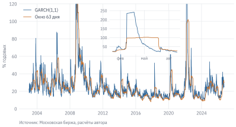
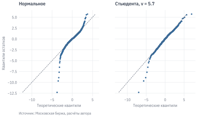
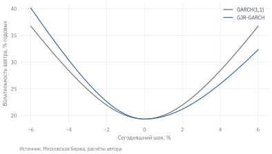
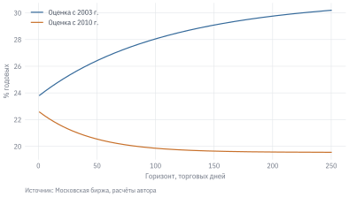
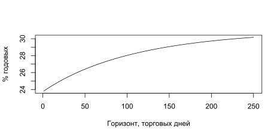

Код
import numpy as np
import pandas as pd
import matplotlib.pyplot as plt
from scipy import stats
from arch import arch_model
from statsmodels.stats.diagnostic import het_arch, acorr_ljungbox
from qf import data, plotВечером 21 февраля 2022 г. годовая волатильность индекса Московской биржи, рассчитанная по модели этой главы, составляла 42% – выше обычного, но в пределах того, что рынок видел не раз. Через два торговых дня, после обвала 24 февраля и частичного отскока 25-го, та же модель показывала 235% годовых. Затем торги акциями остановились почти на месяц. К середине апреля оценка снизилась до 94%, но оставалась в несколько раз выше медианного уровня за два десятилетия, 21%.
Риск на финансовом рынке не постоянен, и это видно без всякой статистики. Но инвестору, риск-менеджеру банка или трейдеру опционами нужно не общее впечатление, а конкретное число: какой волатильности ждать завтра, через неделю, через месяц? Скользящее стандартное отклонение из главы «Доходность и риск» отвечает на этот вопрос плохо: оно реагирует на шок с опозданием, а потом резко «забывает» его, когда шок выходит из окна. В этой главе мы построим модели, в которых сегодняшняя волатильность зависит от вчерашних шоков по явному правилу, оценим их на данных российского рынка и проверим, насколько хорошо они предсказывают.
Данные: indexes.parquet, stocks.parquet (см. данные книги). Нужно знать: автокорреляция, тест Льюнга – Бокса, модели ARMA и прогноз вне выборки (глава «Свойства финансовых рядов и модели ARMA»).
Модели волатильности в Python оценивает пакет arch, в R – пакет rugarch.
import numpy as np
import pandas as pd
import matplotlib.pyplot as plt
from scipy import stats
from arch import arch_model
from statsmodels.stats.diagnostic import het_arch, acorr_ljungbox
from qf import data, plotВ предыдущей главе мы увидели два факта о дневных доходностях индекса IMOEX. Сами доходности почти не автокоррелированы, а их модули и квадраты автокоррелированы сильно и долго. Модель ARMA для среднего доходности оказалась бесполезной, а тест Льюнга – Бокса для квадратов её остатков отверг гипотезу об отсутствии автокорреляции с p-значением, неотличимым от нуля.
Формализуем это наблюдение. Запишем доходность как сумму ожидаемой части и шока:
\[ r_t = \mu_t + \varepsilon_t, \qquad \varepsilon_t = \sigma_t z_t, \tag{8.1}\]
где \(\mu_t\) – условное среднее (для доходностей индекса – практически константа), \(z_t\) – независимые одинаково распределённые величины с нулевым средним и единичной дисперсией, а \(\sigma_t\) – условная волатильность: стандартное отклонение доходности дня \(t\) при условии всего, что известно к концу дня \(t-1\). Модели ARMA предполагают, что \(\sigma_t\) постоянна. Модели этой главы позволяют ей меняться во времени и описывают, как именно.
Слово «условная» здесь ключевое. Безусловная дисперсия доходностей за 20 лет может быть вполне постоянной, как требует стационарность, а условная – меняться каждый день. Это не противоречие: стационарный ряд может иметь периоды спокойствия и бурь, если их чередование подчиняется неизменному правилу.
Стандартная проверка того, зависит ли дисперсия от прошлых шоков, – тест множителей Лагранжа, предложенный Engle (1982 г.). Квадраты шоков регрессируют на их собственные лаги:
\[ \hat\varepsilon_t^2 = c_0 + c_1 \hat\varepsilon_{t-1}^2 + \dots + c_m \hat\varepsilon_{t-m}^2 + u_t. \tag{8.2}\]
Нулевая гипотеза – все \(c_1, \dots, c_m\) равны нулю, то есть условная дисперсия постоянна. Статистика \(T R^2\) этой регрессии при нулевой гипотезе имеет распределение \(\chi^2\) с \(m\) степенями свободы. Тест ARCH-LM и тест Льюнга – Бокса для квадратов проверяют, по сути, одно и то же, и обычно дают одинаковый вывод.
# Дневные лог-доходности IMOEX в процентах: модели GARCH оцениваются устойчивее,
# когда значения ряда порядка единиц, а не тысячных
imoex = data.load_index("IMOEX", start="2003-01-01").set_index("date")["close"]
r = np.log(imoex).diff().dropna() * 100
# Шоки: отклонения от среднего; тест с 5 лагами (торговая неделя)
lm_stat, lm_p = het_arch(r - r.mean(), nlags=5)[:2] # статистика и её p-значение
print(f"ARCH-LM(5) = {lm_stat:.1f}, p-значение = {lm_p:.1e}")
#> ARCH-LM(5) = 277.9, p-значение = 5.5e-58Гипотеза о постоянной условной дисперсии отвергается с огромным запасом. Теперь нужно описать, как именно дисперсия зависит от прошлого.
Самая простая идея принадлежит Engle (1982 г.): пусть сегодняшняя условная дисперсия линейно зависит от квадратов вчерашних шоков. Модель ARCH(1) (autoregressive conditional heteroskedasticity – авторегрессионная условная гетероскедастичность):
\[ \sigma_t^2 = \omega + \alpha \varepsilon_{t-1}^2, \qquad \omega > 0,\ \alpha \ge 0. \tag{8.3}\]
Вчера рынок сильно сдвинулся – сегодня ожидаем большую дисперсию; вчера было тихо – сегодня ожидаем дисперсию около \(\omega\). Модель ARCH(\(q\)) добавляет \(q\) лагов квадратов шоков. Проблема в том, что память волатильности на реальных рынках длинная: мы видели, что автокорреляция модулей доходности заметна и через 30 дней. Чтобы описать это моделью ARCH, нужны десятки лагов и столько же параметров.
Bollerslev (1986 г.) предложил добавить в уравнение вчерашнюю условную дисперсию. Модель GARCH(1,1) (generalized ARCH):
\[ \sigma_t^2 = \omega + \alpha \varepsilon_{t-1}^2 + \beta \sigma_{t-1}^2, \qquad \omega > 0,\ \alpha, \beta \ge 0. \tag{8.4}\]
Сегодняшняя дисперсия складывается из трёх частей: постоянной \(\omega\), реакции на вчерашний шок \(\alpha\varepsilon_{t-1}^2\) и инерции \(\beta\sigma_{t-1}^2\). Подставляя \(\sigma_{t-1}^2\) из того же уравнения, а затем \(\sigma_{t-2}^2\) и так далее, можно увидеть, что GARCH(1,1) – это ARCH с бесконечным числом лагов, веса которых убывают геометрически: \(\alpha, \alpha\beta, \alpha\beta^2, \dots\) Три параметра описывают длинную память, для которой ARCH понадобились бы десятки.
Из уравнения 8.4 следуют три полезные величины.
Модель оценивается методом максимального правдоподобия. Для этого нужно задать модель среднего и распределение \(z_t\). Среднее возьмём постоянным (в предыдущей главе оба информационных критерия не нашли в доходностях индекса ничего лучше константы), распределение – пока нормальным.
# mean="Constant": постоянное среднее; vol="GARCH", p=1, q=1: GARCH(1,1);
# p – число лагов шоков (ARCH-часть), q – число лагов дисперсии (GARCH-часть)
garch_n = arch_model(r, mean="Constant", vol="GARCH", p=1, q=1, dist="normal").fit(disp="off")
print(garch_n.summary().tables[1]) # уравнение среднего
#> Mean Model
#> ==========================================================================
#> coef std err t P>|t| 95.0% Conf. Int.
#> --------------------------------------------------------------------------
#> mu 0.0834 1.884e-02 4.428 9.521e-06 [4.650e-02, 0.120]
#> ==========================================================================
print(garch_n.summary().tables[2]) # уравнение волатильности
#> Volatility Model
#> ============================================================================
#> coef std err t P>|t| 95.0% Conf. Int.
#> ----------------------------------------------------------------------------
#> omega 0.0382 1.555e-02 2.460 1.391e-02 [7.769e-03,6.872e-02]
#> alpha[1] 0.1227 2.515e-02 4.880 1.063e-06 [7.343e-02, 0.172]
#> beta[1] 0.8735 2.382e-02 36.668 2.386e-294 [ 0.827, 0.920]
#> ============================================================================library(rugarch)
library(dplyr)
imoex <- qf_load_index("IMOEX", start = "2003-01-01") |> arrange(date)
r <- 100 * diff(log(imoex$close)) # лог-доходности в процентах
# sGARCH – стандартная модель GARCH(1,1); armaOrder = c(0, 0) – постоянное среднее
spec_n <- ugarchspec(
variance.model = list(model = "sGARCH", garchOrder = c(1, 1)),
mean.model = list(armaOrder = c(0, 0)),
distribution.model = "norm"
)
fit_n <- ugarchfit(spec_n, data = r)
round(coef(fit_n), 4)
#> mu omega alpha1 beta1
#> 0.0835 0.0382 0.1228 0.8733В пакете arch параметр p – число лагов шоков \(\varepsilon^2\), а q – число лагов дисперсии \(\sigma^2\). В rugarch в garchOrder = c(1, 1) первым идёт число лагов шоков, в большинстве учебников GARCH(p, q) пишется наоборот: \(p\) – лаги дисперсии. Для GARCH(1,1) это неважно, но при переборе моделей GARCH(1,2) и GARCH(2,1) легко перепутать одну с другой. Проверяйте по выдаче, какие коэффициенты оценены: alpha[1], alpha[2] или beta[1], beta[2].
Оценки \(\alpha =\) 0,123 и \(\beta =\) 0,873 типичны для индексов акций. Alexander (2008 г.) приводит как ориентир для спокойных рынков \(\alpha\) от 0,05 до 0,1 и \(\beta\) от 0,85 до 0,98. Российский рынок реагирует на шоки чуть сильнее, но общая картина та же: вчерашний шок входит в сегодняшнюю дисперсию с небольшим весом, а основную роль играет инерция. Персистентность 0,996, период полураспада – около 181 торгового дня.
Для сравнения: модель ARCH(1) на тех же данных даёт AIC на 2 494 единицы хуже, чем GARCH(1,1). Один лаг квадрата шока не в состоянии описать длинную память волатильности.
Обратите внимание на безусловную волатильность: по формуле 8.5 она равна 50% годовых, а выборочное стандартное отклонение доходностей за тот же период – 30%. Когда \(\alpha + \beta\) близко к единице, знаменатель \(1 - \alpha - \beta\) мал, и небольшая ошибка в оценке параметров сильно меняет \(\bar\sigma^2\). К этому мы вернёмся при прогнозировании.
Совпадают ли оценки Python и R? Сведём в таблицу коэффициенты и стандартные ошибки модели, оценённой пакетами arch и rugarch на одних и тех же данных.
| μ | ω | α | β | |
|---|---|---|---|---|
| Оценка, arch | 0,0834 | 0,0382 | 0,1227 | 0,8735 |
| Оценка, rugarch | 0,0835 | 0,0382 | 0,1228 | 0,8733 |
| Робастная ст. ошибка, arch (по умолчанию) | 0,0188 | 0,0155 | 0,0252 | 0,0238 |
| Робастная ст. ошибка, rugarch | 0,0195 | 0,0160 | 0,0251 | 0,0235 |
| Обычная ст. ошибка, arch | 0,0153 | 0,0060 | 0,0088 | 0,0084 |
| Обычная ст. ошибка, rugarch | 0,0153 | 0,0060 | 0,0088 | 0,0084 |
Оценки коэффициентов совпадают до третьего знака. Небольшие различия возникают из-за двух технических деталей. Первая – начальное значение дисперсии: уравнение 8.4 рекурсивное, и для первого дня нужно задать \(\sigma_0^2\). Пакет arch берёт взвешенное среднее квадратов первых наблюдений, rugarch – среднее квадратов шоков по всей выборке. Поэтому условная волатильность первого дня выборки у пакетов разная (1,36 и 1,90% в день), но через несколько недель различие исчезает. Вторая – разные алгоритмы оптимизации. Логарифм правдоподобия у пакетов отличается лишь в первом знаке после запятой: −10 472,15 и −10 472,02.
А вот стандартные ошибки по умолчанию различаются в разы, и это уже не техническая деталь. Метод максимального правдоподобия предполагает, что \(z_t\) распределены нормально. У доходностей IMOEX хвосты намного тяжелее, и обычные стандартные ошибки, выведенные в этом предположении, занижены. Робастные стандартные ошибки Боллерслева – Вулдриджа остаются корректными и при неверном распределении \(z_t\). Пакет arch по умолчанию выводит робастные ошибки (cov_type="robust"), а rugarch в выдаче ugarchfit показывает оба варианта: сначала обычные, ниже, в блоке Robust Standard Errors, – робастные. Если сравнивать значимость коэффициентов по выдаче двух пакетов, легко сравнить разные вещи.
Главный результат модели – ряд условной волатильности \(\hat\sigma_t\). Переведём его в годовое выражение и сравним со скользящим стандартным отклонением за 63 торговых дня.
cond_vol = garch_n.conditional_volatility * np.sqrt(252) # % годовых
roll_vol = r.rolling(63).std() * np.sqrt(252)
fig, ax = plt.subplots()
ax.plot(cond_vol.index, cond_vol, color=plot.BLUE, lw=0.8, label="GARCH(1,1)")
ax.plot(roll_vol.index, roll_vol, color=plot.ORANGE, lw=0.8, label="Окно 63 дня")
ax.set_ylim(0, 120) # пик 2022 г. выходит за пределы – он показан на вставке
ax.set_ylabel("% годовых")
ax.legend(loc="upper left")
# Вставка: 2022 г. крупным планом
ins = ax.inset_axes([0.42, 0.52, 0.33, 0.42])
w = slice("2022-01-01", "2022-08-31")
ins.plot(cond_vol.loc[w].index, cond_vol.loc[w], color=plot.BLUE, lw=0.8)
ins.plot(roll_vol.loc[w].index, roll_vol.loc[w], color=plot.ORANGE, lw=0.8)
ins.set_xticks(pd.to_datetime(["2022-02-01", "2022-05-01", "2022-08-01"]))
ins.set_xticklabels(["фев", "май", "авг"])
ins.tick_params(labelsize=7)
plot.source(ax, "Московская биржа, расчёты автора")
plt.show()
Два ряда похожи в целом, но различаются в деталях, и детали важны. GARCH реагирует на шок в тот же день, а скользящее окно – постепенно: большая доходность составляет лишь 1/63 часть окна. Зато потом окно помнит шок ровно 63 дня и забывает его в один момент. Во вставке это видно на примере 2022 г.: 24.06.2022, когда доходность 24 февраля вышла из окна, скользящая волатильность за один день упала с 97% до 53%, хотя на рынке в этот день ничего особенного не произошло. Такой скачок называют эффектом призрака (ghost effect). Условная волатильность GARCH снижалась плавно, по мере затухания шока.
За весь период условная волатильность в 90% дней находилась между 13% и 52% годовых, а максимума, 242%, достигла 24.03.2022.
После 25 февраля 2022 г. торги акциями не проводились до 24 марта. В ряду доходностей эти четыре недели превращаются в одно наблюдение: доходность 24 марта – это изменение индекса за месяц. Модель GARCH считает его доходностью одного дня и по уравнению 8.4 переносит в дисперсию следующего дня. Кроме того, дисперсия за время перерыва не «затухает»: для модели между 25 февраля и 24 марта прошёл один шаг. На выводах главы это сказывается мало, но при анализе именно 2022 г. такие эпизоды стоит либо исключать, либо моделировать отдельно.
До моделей GARCH и сейчас в риск-менеджменте широко используют экспоненциально взвешенную дисперсию (EWMA), популяризованную методикой RiskMetrics (J.P. Morgan/Reuters 1996 г.):
\[ \sigma_t^2 = (1 - \lambda)\,\varepsilon_{t-1}^2 + \lambda\,\sigma_{t-1}^2, \qquad \lambda = 0{,}94. \tag{8.6}\]
Это GARCH(1,1) с \(\omega = 0\), \(\alpha = 1 - \lambda\) и \(\beta = \lambda\), то есть с персистентностью ровно 1. У такой модели нет безусловной дисперсии, к которой возвращается прогноз: сегодняшняя оценка служит прогнозом на любой горизонт. Параметр \(\lambda\) не оценивают, а задают. В обмен на эти ограничения метод не требует оптимизации и одинаково работает для тысяч активов, поэтому его используют в системах расчёта рыночного риска (об этом – в главе о VaR и Expected Shortfall).
В главе «Доходность и риск» мы видели, что распределение доходностей имеет тяжёлые хвосты. Модель GARCH частично их объясняет: смесь спокойных дней с малой дисперсией и бурных с большой даёт тяжёлые хвосты даже при нормальных \(z_t\). Но только частично. Избыточный эксцесс дневных доходностей IMOEX с 2003 г. равен 52 (у нормального распределения – 0). Такое значение создают прежде всего несколько экстремальных дней, в первую очередь 24.02.2022 с доходностью −40,5%. У стандартизованных остатков модели \(\hat z_t = \hat\varepsilon_t / \hat\sigma_t\) эксцесс снижается до 7,7, но остаётся далёким от нуля.
Поэтому для \(z_t\) обычно берут стандартизованное распределение Стьюдента с \(\nu\) степенями свободы. Чем меньше \(\nu\), тем тяжелее хвосты; при \(\nu \to \infty\) оно превращается в нормальное. Параметр \(\nu\) оценивается вместе с остальными.
garch_t = arch_model(r, mean="Constant", vol="GARCH", p=1, q=1, dist="t").fit(disp="off")
# Параметры и качество подгонки двух моделей: строки – показатели, столбцы – распределения
comp = pd.DataFrame({"Нормальное": garch_n.params, "Стьюдента": garch_t.params})
comp = comp.reindex(["mu", "omega", "alpha[1]", "beta[1]", "nu"]) # порядок как в уравнениях
comp.loc["Лог-правдоподобие"] = [garch_n.loglikelihood, garch_t.loglikelihood]
comp.loc["BIC"] = [garch_n.bic, garch_t.bic]
# Русская запись чисел: запятая, типографский минус, неразрывный пробел между разрядами
ru = lambda v: "–" if pd.isna(v) else f"{v:,.3f}".replace(",", " ").replace(".", ",").replace("-", "−")
comp.style.format(ru)| Нормальное | Стьюдента | |
|---|---|---|
| mu | 0,083 | 0,087 |
| omega | 0,038 | 0,028 |
| alpha[1] | 0,123 | 0,107 |
| beta[1] | 0,873 | 0,888 |
| nu | – | 5,682 |
| Лог-правдоподобие | −10 472,154 | −10 172,873 |
| BIC | 20 979,048 | 20 389,172 |
# distribution.model = "std" – стандартизованное распределение Стьюдента
spec_t <- ugarchspec(
variance.model = list(model = "sGARCH", garchOrder = c(1, 1)),
mean.model = list(armaOrder = c(0, 0)),
distribution.model = "std"
)
fit_t <- ugarchfit(spec_t, data = r)
round(coef(fit_t), 4) # shape – число степеней свободы ν
#> mu omega alpha1 beta1 shape
#> 0.0868 0.0284 0.1077 0.8876 5.6821
infocriteria(fit_t)
#>
#> Akaike 3.442057
#> Bayes 3.447709
#> Shibata 3.442056
#> Hannan-Quinn 3.444022Оценка \(\nu \approx\) 5,7: хвосты заметно тяжелее нормальных. Лог-правдоподобие выросло на 299 при одном дополнительном параметре – это огромное улучшение. Параметры уравнения дисперсии изменились мало. Распределение Стьюдента особенно важно там, где интересны именно хвосты: при расчёте VaR и Expected Shortfall нормальное распределение систематически занижает вероятность больших потерь.
z = garch_t.std_resid.dropna()
nu = garch_t.params["nu"]
probs = (np.arange(1, len(z) + 1) - 0.5) / len(z) # уровни эмпирических квантилей
q_emp = np.sort(z)
q_norm = stats.norm.ppf(probs)
# Стандартизованное t: квантили t(ν), делённые на его стандартное отклонение √(ν/(ν−2))
q_t = stats.t.ppf(probs, nu) / np.sqrt(nu / (nu - 2))
fig, axes = plt.subplots(1, 2, figsize=(6.5, 3.2), sharey=True)
for ax, q, title in [(axes[0], q_norm, "Нормальное"), (axes[1], q_t, f"Стьюдента, ν = {nu:.1f}")]:
ax.scatter(q, q_emp, s=4, color=plot.BLUE)
lim = [q_emp.min(), q_emp.max()]
ax.plot(lim, lim, color=plot.LIGHT, lw=0.8, ls="--") # линия совпадения квантилей
ax.set_title(title)
ax.set_xlabel("Теоретические квантили")
axes[0].set_ylabel("Квантили остатков")
plot.source(axes[0], "Московская биржа, расчёты автора", offset=32)
plt.show()
На левой панели точки на концах уходят от прямой: крупных стандартизованных шоков больше, чем допускает нормальное распределение. На правой они ложатся на прямую почти везде, кроме нескольких крайних точек. Самая левая точка – 24 февраля 2022 г.: даже с учётом повышенной волатильности накануне это событие для модели было почти невероятным.
Модель GARCH(1,1) реагирует на квадрат шока, то есть одинаково на рост и на падение одной величины. На рынках акций это обычно не так: падения повышают волатильность сильнее, чем рост. Одно из объяснений – эффект рычага: при падении цены акции доля долга в капитале компании растёт, и акция становится рискованнее. Другое – поведение инвесторов, которые распродают активы в панике, но не скупают их с тем же азартом.
Модель GJR-GARCH (Glosten и др. 1993 г.) добавляет слагаемое, которое включается только при отрицательном шоке:
\[ \sigma_t^2 = \omega + \alpha\varepsilon_{t-1}^2 + \gamma\,\varepsilon_{t-1}^2\,\mathbb{1}[\varepsilon_{t-1} < 0] + \beta\sigma_{t-1}^2. \tag{8.7}\]
После роста дисперсия реагирует с коэффициентом \(\alpha\), после падения – с коэффициентом \(\alpha + \gamma\). Если \(\gamma > 0\) и значим, асимметрия есть. Персистентность этой модели при симметричном распределении \(z_t\) равна \(\alpha + \gamma/2 + \beta\).
# o=1: одно асимметричное слагаемое (GJR)
gjr_t = arch_model(r, mean="Constant", vol="GARCH", p=1, o=1, q=1, dist="t").fit(disp="off")
print(gjr_t.summary().tables[2])
#> Volatility Model
#> ============================================================================
#> coef std err t P>|t| 95.0% Conf. Int.
#> ----------------------------------------------------------------------------
#> omega 0.0310 6.416e-03 4.834 1.339e-06 [1.844e-02,4.359e-02]
#> alpha[1] 0.0738 9.383e-03 7.870 3.549e-15 [5.545e-02,9.223e-02]
#> gamma[1] 0.0623 1.467e-02 4.244 2.200e-05 [3.351e-02,9.103e-02]
#> beta[1] 0.8869 9.978e-03 88.890 0.000 [ 0.867, 0.906]
#> ============================================================================spec_gjr <- ugarchspec(
variance.model = list(model = "gjrGARCH", garchOrder = c(1, 1)),
mean.model = list(armaOrder = c(0, 0)),
distribution.model = "std"
)
fit_gjr <- ugarchfit(spec_gjr, data = r)
round(coef(fit_gjr), 4) # gamma1 – коэффициент асимметрии
#> mu omega alpha1 beta1 gamma1 shape
#> 0.0761 0.0310 0.0739 0.8868 0.0624 5.7779Коэффициент \(\gamma =\) 0,062 значим, и BIC модели GJR лучше, чем у симметричной, на 13. После падения индекса дисперсия реагирует на шок в 1,8 раза сильнее, чем после роста той же величины. Наглядно это показывает кривая влияния новостей (news impact curve): условная дисперсия завтрашнего дня как функция сегодняшнего шока при прочих равных.
shock = np.linspace(-6, 6, 241) # сегодняшний шок, %
# Прочие равные: вчерашняя дисперсия – на уровне медианы условной дисперсии
sig2_prev = np.median(gjr_t.conditional_volatility**2)
pg, pt = gjr_t.params, garch_t.params
sig2_garch = pt["omega"] + pt["alpha[1]"] * shock**2 + pt["beta[1]"] * sig2_prev
sig2_gjr = (pg["omega"] + (pg["alpha[1]"] + pg["gamma[1]"] * (shock < 0)) * shock**2
+ pg["beta[1]"] * sig2_prev)
fig, ax = plt.subplots()
ax.plot(shock, np.sqrt(sig2_garch * 252), color=plot.GREY, label="GARCH(1,1)")
ax.plot(shock, np.sqrt(sig2_gjr * 252), color=plot.BLUE, label="GJR-GARCH")
ax.set_xlabel("Сегодняшний шок, %")
ax.set_ylabel("Волатильность завтра, % годовых")
ax.legend()
plot.source(ax, "Московская биржа, расчёты автора", offset=32)
plt.show()
Посмотрим, насколько эти результаты общие. Оценим GJR-GARCH с распределением Стьюдента для нескольких ликвидных акций, индекса IMOEX и индекса государственных облигаций RGBI. Возьмём период с 2010 г., чтобы история была у всех бумаг.
def fit_gjr(prices):
"""GJR-GARCH(1,1) с t-распределением по ряду цен; возвращает ключевые характеристики."""
ret = np.log(prices.dropna()).diff().dropna() * 100
res = arch_model(ret, mean="Constant", vol="GARCH", p=1, o=1, q=1, dist="t").fit(disp="off")
p = res.params
pers = p["alpha[1]"] + p["gamma[1]"] / 2 + p["beta[1]"]
return {"α": p["alpha[1]"], "γ": p["gamma[1]"], "β": p["beta[1]"],
"α + γ/2 + β": pers,
"Полураспад, дней": np.log(0.5) / np.log(pers) if pers < 0.999 else np.nan,
"ν": p["nu"]}
ix = data.load_index(["IMOEX", "RGBI"], start="2010-01-01").pivot(index="date", columns="ticker", values="close")
stocks = data.load_prices(["SBER", "GAZP", "LKOH", "GMKN", "MGNT", "MTSS"], start="2010-01-01")
prices = pd.concat([ix, stocks], axis=1)
tab = pd.DataFrame({t: fit_gjr(prices[t]) for t in prices.columns}).T
# Формат для каждого столбца: три знака у коэффициентов, целые дни полураспада
fmt = {c: "{:.3f}" for c in tab.columns} | {"Полураспад, дней": "{:.0f}", "ν": "{:.1f}"}
tab.style.format(fmt, decimal=",", na_rep="–")| α | γ | β | α + γ/2 + β | Полураспад, дней | ν | |
|---|---|---|---|---|---|---|
| IMOEX | 0,043 | 0,084 | 0,892 | 0,977 | 30 | 6,2 |
| RGBI | 0,206 | 0,170 | 0,709 | 1,000 | – | 4,0 |
| GAZP | 0,062 | 0,107 | 0,858 | 0,974 | 26 | 4,8 |
| GMKN | 0,061 | 0,052 | 0,889 | 0,976 | 29 | 5,0 |
| LKOH | 0,044 | 0,102 | 0,878 | 0,973 | 25 | 5,6 |
| MGNT | 0,065 | 0,127 | 0,814 | 0,943 | 12 | 4,6 |
| MTSS | 0,046 | 0,082 | 0,903 | 0,990 | 70 | 4,4 |
| SBER | 0,065 | 0,090 | 0,880 | 0,990 | 70 | 4,8 |
У всех акций \(\gamma\) положителен (от 0,05 до 0,13): асимметрия – общее свойство рынка, а не особенность индекса. Хвосты у отдельных акций тяжелее, чем у индекса (\(\nu\) меньше), потому что в индексе специфические шоки компаний частично гасят друг друга.
Сравните персистентность IMOEX в этой таблице с оценкой по периоду с 2003 г. С 2010 г. \(\alpha + \gamma/2 + \beta =\) 0,977 и период полураспада около 30 дней, а с 2003 г. персистентность была заметно ближе к единице. Кризис 2008 г., когда высокая волатильность держалась месяцами, добавляет в оценку «длинную память». Параметры GARCH не являются константами природы: они зависят от выборки, и чем ближе персистентность к единице, тем сильнее.
Индекс облигаций RGBI устроен иначе. Персистентность упирается в единицу (1,000), и период полураспада не определён. Волатильность облигаций определяется режимами денежно-кредитной политики: в период высокой и меняющейся ключевой ставки колебания цен ОФЗ велики, в период стабильной ставки – малы, и такие режимы длятся годами. Модель GARCH(1,1) описывает это как почти бесконечную память. Это сигнал, что для таких рядов нужны другие модели, например с явной сменой режимов.
Если модель верна, стандартизованные остатки \(\hat z_t = \hat\varepsilon_t / \hat\sigma_t\) должны быть независимыми и одинаково распределёнными. Значит, ни в них, ни в их квадратах не должно остаться автокорреляции. Проверяем тестом Льюнга – Бокса и тестом ARCH-LM.
z = gjr_t.std_resid.dropna() # стандартизованные остатки: ε / σ
raw = gjr_t.resid.dropna() # «сырые» остатки: ε = r − μ
pd.DataFrame({
"Ljung–Box, z": [acorr_ljungbox(z, lags=[10])["lb_pvalue"].iloc[0]],
"Ljung–Box, z²": [acorr_ljungbox(z**2, lags=[10])["lb_pvalue"].iloc[0]],
"ARCH-LM, z": [het_arch(z, nlags=5)[1]],
"ARCH-LM, ε (неверно)": [het_arch(raw, nlags=5)[1]],
}, index=["p-значение"]).T.round(4)
#> p-значение
#> Ljung–Box, z 0.1507
#> Ljung–Box, z² 0.5656
#> ARCH-LM, z 0.1494
#> ARCH-LM, ε (неверно) 0.0000По стандартизованным остаткам оба теста не находят оставшейся зависимости в дисперсии: p-значение ARCH-LM равно 0,15. Модель забрала из квадратов доходностей всю автокорреляцию, которую тесты способны обнаружить.
Атрибут res.resid в пакете arch – это остатки уравнения среднего \(\hat\varepsilon_t = r_t - \hat\mu\), а не стандартизованные остатки. В них по-прежнему есть кластеры волатильности: модель ничего не делает с самими шоками, она описывает их дисперсию. Тест ARCH-LM по res.resid даёт p-значение меньше 0,001 и приводит к ложному выводу, что модель «не справилась» и нужно увеличивать число лагов. Проверять нужно res.std_resid, то есть \(\hat\varepsilon_t / \hat\sigma_t\). В R стандартизованные остатки возвращает residuals(fit, standardize = TRUE).
Прогноз условной дисперсии GARCH(1,1) на \(h\) дней вперёд из момента \(T\) строится рекурсивно по уравнению 8.4, в котором будущие \(\varepsilon^2\) заменяются их ожиданием \(\sigma^2\):
\[ \hat\sigma_{T+h}^2 = \bar\sigma^2 + (\alpha + \beta)^{h-1}\left(\hat\sigma_{T+1}^2 - \bar\sigma^2\right). \tag{8.8}\]
Прогноз сходится к безусловной дисперсии \(\bar\sigma^2\) со скоростью, заданной персистентностью. Если сейчас волатильность ниже среднего уровня, модель ожидает её роста, если выше – снижения. Прогноз волатильности за период из \(H\) дней – корень из суммы прогнозов дисперсии на каждый из этих дней.
r10 = r.loc["2010-01-01":]
gjr_10 = arch_model(r10, mean="Constant", vol="GARCH", p=1, o=1, q=1, dist="t").fit(disp="off")
fig, ax = plt.subplots()
for res, label, color in [(gjr_t, "Оценка с 2003 г.", plot.BLUE), (gjr_10, "Оценка с 2010 г.", plot.ORANGE)]:
# Прогноз из последней даты: дисперсии на 1, 2, ..., 250 дней вперёд
var_path = res.forecast(horizon=250, reindex=False).variance.iloc[-1].values
ax.plot(np.arange(1, 251), np.sqrt(var_path * 252), color=color, label=label)
ax.set_xlabel("Горизонт, торговых дней")
ax.set_ylabel("% годовых")
ax.legend()
plot.source(ax, "Московская биржа, расчёты автора", offset=32)
plt.show()
# Прогноз на 250 дней: sigma(fc) – прогноз условного стандартного отклонения на каждый день
fc <- ugarchforecast(fit_gjr, n.ahead = 250)
plot(sqrt(252) * as.numeric(sigma(fc)), type = "l",
xlab = "Горизонт, торговых дней", ylab = "% годовых")
На 29.09.2026 условная волатильность индекса – около 24% годовых. Краткосрочные прогнозы двух моделей почти совпадают, потому что определяются текущим состоянием рынка. Долгосрочные расходятся даже по направлению. Модель, оценённая с 2003 г., ожидает роста волатильности: через год – до 30%. Модель, оценённая с 2010 г., ожидает снижения до 20%. Долгосрочный прогноз определяется безусловной дисперсией, то есть тем, сколько кризисов попало в выборку: с 2003 г. в неё входит 2008 г., с 2010 г. – нет. Прогноз GARCH на год вперёд – это по сути ответ на вопрос «какой была средняя волатильность в истории», и к нему нужно относиться как к допущению аналитика, а не как к свойству данных.
Проверим прогнозы вне выборки по той же схеме, что в предыдущей главе. Модели оценим на 2003–2019 гг., параметры зафиксируем и будем каждый день 2020–2026 гг. строить прогноз по данным, известным накануне. Сравним четыре метода: GJR-GARCH с распределением Стьюдента, EWMA с \(\lambda = 0{,}94\), скользящее окно в 63 дня и историческую дисперсию по всем прошлым данным.
Сложность в том, что истинная волатильность ненаблюдаема. Сравнивать прогноз приходится с её зашумлённой оценкой: для прогноза на день – с квадратом доходности \(r_{t}^2\), для прогноза на месяц – с реализованной дисперсией, суммой квадратов доходностей за следующие 21 торговый день. Patton (2011 г.) показал, что при зашумлённой оценке не всякая функция потерь ранжирует прогнозы правильно. Две функции потерь, которые ранжируют их верно, – среднеквадратичная ошибка по дисперсии и функция QLIKE:
\[ L(\hat\sigma^2, \mathrm{RV}) = \ln\hat\sigma^2 + \frac{\mathrm{RV}}{\hat\sigma^2}, \tag{8.9}\]
где \(\hat\sigma^2\) – прогноз дисперсии, а RV – её реализованная оценка. QLIKE штрафует за занижение волатильности сильнее, чем за завышение, и слабо реагирует на отдельные экстремальные наблюдения. Среднеквадратичная ошибка, напротив, почти целиком определяется несколькими днями с наибольшими доходностями.
split, H = "2019-12-31", 21
test_idx = r.loc["2020-01-01":].index
# GJR-GARCH: параметры по данным до split (last_obs), прогнозы из каждой даты после split.
# Строка с датой t содержит прогноз на t+1, ..., t+H по данным до t включительно.
gjr_is = arch_model(r, mean="Constant", vol="GARCH", p=1, o=1, q=1, dist="t").fit(
last_obs=split, disp="off")
fvar = gjr_is.forecast(start=split, horizon=H, reindex=False).variance
fc_1 = {"GJR-GARCH": fvar["h.01"]} # прогноз дисперсии на день
fc_H = {"GJR-GARCH": fvar.sum(axis=1)} # прогноз суммарной дисперсии за H дней
# EWMA (RiskMetrics): оценка на t – прогноз на t+1 и на каждый из следующих дней
eps2 = (r - r.loc[:split].mean()) ** 2
ewma = eps2.ewm(alpha=1 - 0.94, adjust=False).mean()
roll = r.rolling(63).var() # скользящее окно 63 дня
hist = r.expanding().var() # вся доступная история
for name, v in {"EWMA": ewma, "Окно 63 дня": roll, "Историческая": hist}.items():
fc_1[name], fc_H[name] = v, v * H
# Реализованные значения: r² дня t и сумма r² за дни t, ..., t+H−1
r2 = r**2
rv_H = r2.rolling(H).sum().shift(-(H - 1))
def evaluate(mask):
rows = {}
for name in fc_1:
# прогноз для дня t сделан накануне: сдвигаем на один торговый день
f1 = fc_1[name].shift(1).reindex(test_idx)[mask]
fH = fc_H[name].shift(1).reindex(test_idx)[mask]
real1, realH = r2.reindex(test_idx)[mask], rv_H.reindex(test_idx)[mask]
ok = realH.notna()
rows[name] = {
"QLIKE, 1 день": np.mean(np.log(f1) + real1 / f1),
"QLIKE, 21 день": np.mean(np.log(fH[ok]) + realH[ok] / fH[ok]),
"RMSE, 21 день": np.sqrt(np.mean((np.sqrt(realH[ok] / H * 252) - np.sqrt(fH[ok] / H * 252)) ** 2)),
}
return pd.DataFrame(rows).T
all_days = np.ones(len(test_idx), dtype=bool)
no_2022 = test_idx.year != 2022
oos = pd.concat({"2020–2026": evaluate(all_days), "без 2022 г.": evaluate(no_2022)}, axis=1)
oos.style.format("{:.2f}", decimal=",")| 2020–2026 | без 2022 г. | |||||
|---|---|---|---|---|---|---|
| QLIKE, 1 день | QLIKE, 21 день | RMSE, 21 день | QLIKE, 1 день | QLIKE, 21 день | RMSE, 21 день | |
| GJR-GARCH | 1,52 | 4,85 | 21,03 | 1,26 | 4,48 | 8,38 |
| EWMA | 1,59 | 5,01 | 20,98 | 1,30 | 4,64 | 8,81 |
| Окно 63 дня | 1,80 | 5,22 | 22,09 | 1,43 | 4,78 | 9,86 |
| Историческая | 2,23 | 5,29 | 21,09 | 1,78 | 4,84 | 15,10 |
По QLIKE на обоих горизонтах лучше всех прогнозирует модель GJR-GARCH, за ней EWMA, затем скользящее окно, а историческая дисперсия – хуже всех. Модели, которые быстро реагируют на новую информацию, выигрывают у тех, кто усредняет длинную историю.
Среднеквадратичная ошибка за весь период рисует другую картину: все методы оказываются примерно одинаковыми, и даже историческая дисперсия почти не уступает GARCH (21,1 против 21,0 п. п.). Причина – февраль и март 2022 г. Реализованная волатильность этих недель в разы превышает любой прогноз, и квадраты этих ошибок заглушают всё остальное. Без 2022 г. порядок восстанавливается: GJR-GARCH – 8,4 п. п., EWMA – 8,8, окно – 9,9, историческая дисперсия – 15,1.
Вывод согласуется с большим исследованием Hansen и Lunde (2005 г.), где сотни моделей волатильности сравнивались на валютных курсах и акциях. Модели сложнее GARCH(1,1) редко дают заметное преимущество, но и сама GARCH(1,1) заметно лучше простых правил, которые не учитывают, как быстро затухают шоки.
Та же ловушка, что в предыдущей главе, встречается и здесь. Вызов res.forecast(horizon=len(test)) у модели, оценённой на обучающей выборке, даёт один прогноз из последней обучающей даты на все дни теста вперёд. Он плавно сходится к безусловной дисперсии и не содержит информации о том, что происходило в тестовом периоде. Для проверки нужны прогнозы на день вперёд из каждой даты: в пакете arch – fit(last_obs=...) и forecast(start=...), как в коде выше.
Вторая ошибка связана с интерпретацией: полоса \(\hat\mu \pm \hat\sigma\) вокруг прогноза доходности – это не 95%-й доверительный интервал. При нормальном распределении она накрывает около 68% дней, а для 95% нужно \(\pm 1{,}96\hat\sigma\). При распределении Стьюдента множитель зависит от \(\nu\).
Упражнения разделены на четыре типа. Задания А проверяют понимание и решаются без компьютера. Задания Б выполняются на данных вашей акции (тикер назначает преподаватель), поэтому готового ответа у них нет. Задания В учат работать с ИИ-ассистентом: не получать ответ, а проверять его. Задание Г – небольшое исследование, результаты которого нужно защитить устно.